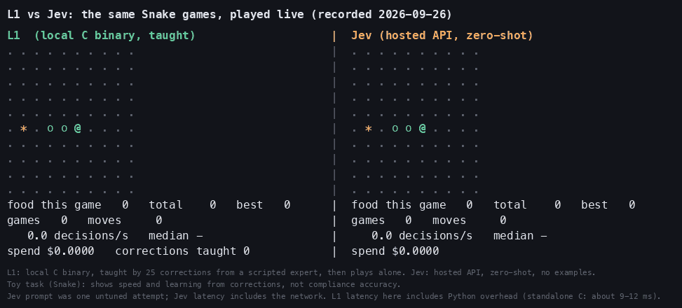

A decision that arrives late is a wrong decision.
linearone-local is a small classifier in C that runs on one CPU thread in ~10-20 ms, with no network. Below: what that speed is worth, and, honestly, what it is not.
1. Flap: same answers, different speed
Two birds fly the same course. Every tick both are handed the identical correct answer (the game's expert rule); the only difference is how long an answer takes. The left bird answers in 12 ms (L1's measured speed). The right one takes as long as you set below (a hosted API from a laptop measured about 430 ms).
games/flap_env.py. In this game the bird still copes up to about 100 ms, mostly crashes by 200 ms, and at 430 ms never gets through the first pipe. In our scored benchmark a hosted model given the right answers scored 0 pipes at its real latency and 9 (the cap) with latency removed.2. Snake: same answers, two speeds
Both snakes use the same safe-greedy answer for every move. The local one decides in about 12 ms; the hosted one takes the latency you set. Food eaten in the same time is the whole difference.
3. The latency budget: what fits in one decision?
4. Rubik's cube: where speed does not help
A 2x2 cube where the exact answer is known by search. Scramble it, then try to solve it, or ask for the optimal move. In our test no language model, embedding model or hosted API did better than about a coin flip on picking a good move; only models fed the raw stickers reached 50-63%.
Three players make greedy moves. Coin flip picks a random move. Nearest neighbour is a real learner trained right here in your browser on 200 solver-labelled states that never include the 20 test scrambles (the benchmark's recipe). Exact solver is breadth-first search.
games/cube_run.txt. Optimal-move rate, not solve rate: nothing except the solver reliably solves it.5. The recorded Snake clip: L1 learning from corrections
The same Snake games, played live by L1 (taught by 25 corrections, no retraining) and by a hosted model. Recorded 2026-09-26.

The honest part
- Speed is the advantage. A local model can answer inside a real-time loop; a network call cannot.
- Accuracy is not. On all three games a decision tree or embedding + logistic regression on the same data matched or beat L1's nearest-example rule. L1 itself scored 0-2 pipes in Flap where the tree got 9.
- The games are toys with a few dozen state texts. They show latency and instant correction, not that ML is needed.
- One run each on held-out seeds; the plan and its amendments (including two bugs found before scoring) are in
games/PLAN.md.
Code, results and how to reproduce: see the repository README.